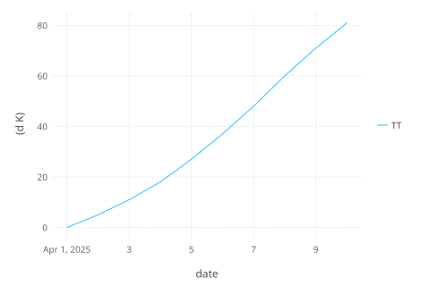
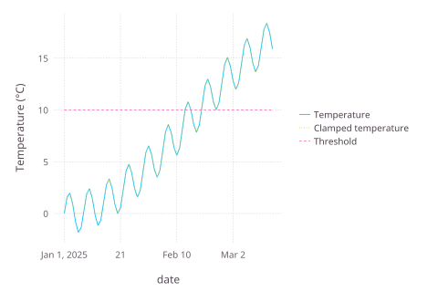
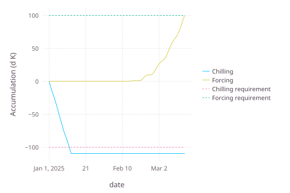

Weather-driven Phenology
This tutorial develops a thermal-time model from an equation, connects it to daily weather, and stops the simulation at maturity. It then reuses the weather component for a two-stage chilling–forcing model. Process components are written independently, then composed with environment and controller systems.
Add the packages used below to your active Julia environment, then run the blocks in order in the same session. Dates is part of Julia.
using Pkg
Pkg.add(["Cropbox", "DataFrames"])The model
For daily mean temperature $T$, base temperature $T_b$, and optimum temperature $T_{opt}$, define effective temperature and accumulated thermal time as
\[\Delta T = \max(\min(T, T_{opt}) - T_b, 0), \qquad TT_{i+1} = TT_i + \Delta T_i \Delta t.\]
The crop is mature when $TT$ reaches its requirement.
Prepare weather data
The example is self-contained. A real analysis would normally read the same columns from a CSV file. The Beltsville, Maryland 2002 weather.csv used by the original tutorial remains available as a larger unit-annotated sample.
using Cropbox
using DataFrames
using Dates
dates = Date(2025, 4, 1):Day(1):Date(2025, 4, 20)
weather = DataFrame(
date = collect(dates),
Tavg = [10, 11, 12, 14, 15, 16, 17, 16, 15, 14,
13, 12, 14, 16, 18, 19, 17, 15, 13, 12],
)| Row | date | Tavg |
|---|---|---|
| Date | Int64 | |
| 1 | 2025-04-01 | 10 |
| 2 | 2025-04-02 | 11 |
| 3 | 2025-04-03 | 12 |
| 4 | 2025-04-04 | 14 |
| 5 | 2025-04-05 | 15 |
| 6 | 2025-04-06 | 16 |
| 7 | 2025-04-07 | 17 |
| 8 | 2025-04-08 | 16 |
| 9 | 2025-04-09 | 15 |
| 10 | 2025-04-10 | 14 |
| 11 | 2025-04-11 | 13 |
| 12 | 2025-04-12 | 12 |
| 13 | 2025-04-13 | 14 |
| 14 | 2025-04-14 | 16 |
| 15 | 2025-04-15 | 18 |
| 16 | 2025-04-16 | 19 |
| 17 | 2025-04-17 | 17 |
| 18 | 2025-04-18 | 15 |
| 19 | 2025-04-19 | 13 |
| 20 | 2025-04-20 | 12 |
Keep units at the model boundary. Here the table contains plain numbers and the drive declaration supplies degrees Celsius.
Declare the weather component
@system Weather begin
calendar(context) ~ ::Calendar
date(calendar.date) ~ track::date
data ~ provide(parameter, index = :date, init = date)
T: temperature ~ drive(from = data, by = :Tavg, u"°C")
endMain.Weatherprovide stores an indexed table. drive reads the row corresponding to the current calendar date. The model equations depend on T, not on DataFrame operations.
Declare thermal time
@system ThermalTime begin
Tb: base_temperature => 5 ~ preserve(parameter, u"°C")
Topt: optimum_temperature => 30 ~ preserve(parameter, u"°C")
requirement => 75 ~ preserve(parameter, u"K*d")
Tbounded(T, Topt) => T ~ track(max = Topt, u"°C")
ΔT(Tbounded, Tb): effective_temperature => Tbounded - Tb ~ track(min = 0, u"K")
TT(ΔT): thermal_time ~ accumulate(u"K*d")
mature(TT, R = requirement) => TT >= R ~ flag
endMain.ThermalTimeThe max = Topt tag caps the stored temperature and min = 0 implements the lower bound of effective temperature. The equation therefore contains no hidden clamping function. accumulate combines effective temperature with the daily clock step and stores kelvin-days.
R = requirement is a local argument alias; it shortens the maturity equation without renaming the model variable.
Compose the executable model
@system PhenologyModel(ThermalTime, Weather, Controller)Main.PhenologyModelvisualize with kind = :hierarchy shows how the reusable process, environment, controller, and child systems are assembled:
visualize(PhenologyModel; kind = :hierarchy)
-->
<!-- Pages: 1 -->
<svg width="213pt" height="111pt"
viewBox="0.00 0.00 213.00 111.00" xmlns="http://www.w3.org/2000/svg" xmlns:xlink="http://www.w3.org/1999/xlink">
<g id="graph0" class="graph" transform="scale(1 1) rotate(0) translate(4 106.72)">
<polygon fill="white" stroke="none" points="-4,4 -4,-106.72 209.44,-106.72 209.44,4 -4,4"/>
<!-- 2&%2345;>1 -->
<g id="edge1" class="edge">
<title>2&%2345;>1</title>
<path fill="none" stroke="black" stroke-width="0.2" stroke-dasharray="5,2" d="M43.01,-59.34C54.64,-65.76 72.26,-75.49 84.41,-82.2"/>
<polygon fill="black" stroke="black" stroke-width="0.2" points="83.81,-82.66 85.9,-83.02 84.48,-81.44 83.81,-82.66"/>
</g>
<!-- 3&%2345;>1 -->
<g id="edge2" class="edge">
<title>3&%2345;>1</title>
<path fill="none" stroke="black" stroke-width="0.2" stroke-dasharray="5,2" d="M113.73,-59.17C110.57,-65.32 105.79,-74.63 102.33,-81.35"/>
<polygon fill="black" stroke="black" stroke-width="0.2" points="101.74,-80.98 101.44,-83.08 102.98,-81.62 101.74,-80.98"/>
</g>
<!-- 4&%2345;>1 -->
<g id="edge3" class="edge">
<title>4&%2345;>1</title>
<path fill="none" stroke="black" stroke-width="0.2" d="M96.1,-19.35C94.38,-25.62 91.99,-35.33 91.03,-43.94 90.27,-50.82 90.25,-52.63 91.03,-59.51 91.88,-66.94 93.87,-75.21 95.52,-81.21"/>
<polygon fill="black" stroke="black" stroke-width="0.2" points="94.81,-81.28 96.02,-83.02 96.16,-80.91 94.81,-81.28"/>
</g>
<!-- 4&%2345;>3 -->
<g id="edge4" class="edge">
<title>4&%2345;>3</title>
<path fill="none" stroke="black" stroke-width="0.2" d="M101.34,-19.34C104.5,-25.66 109.28,-35.22 112.74,-42.13"/>
<polygon fill="black" stroke="black" stroke-width="0.2" points="112.11,-42.43 113.63,-43.91 113.36,-41.81 112.11,-42.43"/>
</g>
<!-- 5&%2345;>1 -->
<g id="edge5" class="edge">
<title>5&%2345;>1</title>
<path fill="none" stroke="black" stroke-width="0.2" stroke-dasharray="5,2" d="M162.91,-59.34C149.29,-65.72 128.69,-75.37 114.37,-82.07"/>
<polygon fill="black" stroke="black" stroke-width="0.2" points="114.09,-81.43 112.58,-82.91 114.68,-82.7 114.09,-81.43"/>
</g>
<!-- 1 -->
<g id="node1" class="node">
<title>1</title>
<text xml:space="preserve" text-anchor="start" x="61.28" y="-88.8" font-family="Courier,monospace" font-weight="bold" font-size="9.00">PhenologyModel</text>
</g>
<!-- 2 -->
<g id="node2" class="node">
<title>2</title>
<text xml:space="preserve" text-anchor="start" x="2.16" y="-49.8" font-family="Courier,monospace" font-weight="bold" font-size="9.00">ThermalTime</text>
</g>
<!-- 3 -->
<g id="node3" class="node">
<title>3</title>
<text xml:space="preserve" text-anchor="start" x="98.66" y="-49.8" font-family="Courier,monospace" font-weight="bold" font-size="9.00">Weather</text>
</g>
<!-- 4 -->
<g id="node4" class="node">
<title>4</title>
<text xml:space="preserve" text-anchor="start" x="77.03" y="-9.8" font-family="Courier,monospace" font-weight="bold" font-size="9.00">Calendar</text>
</g>
<!-- 5 -->
<g id="node5" class="node">
<title>5</title>
<text xml:space="preserve" text-anchor="start" x="150.78" y="-49.8" font-family="Courier,monospace" font-weight="bold" font-size="9.00">Controller</text>
</g>
</g>
</svg>
)
Dashed arrows identify mixins; solid arrows identify child-system relationships. The runtime context is omitted while the Calendar used by Weather remains visible.
The final system contains the process, environment, and root controller. The same ThermalTime component can be reused with another weather implementation.
Follow weather into the thermal state
A variable path follows the input table through the accumulated thermal state to the maturity flag. Grouping by system separates the weather and process declarations without changing the selection:
g = visualize(PhenologyModel, :data => :mature; style = (group = :system,))
-->
<!-- Pages: 1 -->
<svg width="547pt" height="277pt"
viewBox="0.00 0.00 547.00 277.00" xmlns="http://www.w3.org/2000/svg" xmlns:xlink="http://www.w3.org/1999/xlink">
<g id="graph0" class="graph" transform="scale(1 1) rotate(0) translate(4 273.47)">
<polygon fill="white" stroke="none" points="-4,4 -4,-273.47 542.94,-273.47 542.94,4 -4,4"/>
<g id="clust1" class="cluster">
<title>cluster_1</title>
<path fill="none" stroke="%23bfbfbf" stroke-width="0.25" d="M39.82,-8C39.82,-8 499.12,-8 499.12,-8 505.12,-8 511.12,-14 511.12,-20 511.12,-20 511.12,-128.26 511.12,-128.26 511.12,-134.26 505.12,-140.26 499.12,-140.26 499.12,-140.26 39.82,-140.26 39.82,-140.26 33.82,-140.26 27.82,-134.26 27.82,-128.26 27.82,-128.26 27.82,-20 27.82,-20 27.82,-14 33.82,-8 39.82,-8"/>
<text xml:space="preserve" text-anchor="start" x="35.82" y="-129.66" font-family="Courier,monospace" font-weight="bold" font-size="8.00">ThermalTime</text>
</g>
<g id="clust2" class="cluster">
<title>cluster_2</title>
<path fill="none" stroke="%23bfbfbf" stroke-width="0.25" d="M64.16,-148.26C64.16,-148.26 220.96,-148.26 220.96,-148.26 226.96,-148.26 232.96,-154.26 232.96,-160.26 232.96,-160.26 232.96,-233.9 232.96,-233.9 232.96,-239.9 226.96,-245.9 220.96,-245.9 220.96,-245.9 64.16,-245.9 64.16,-245.9 58.16,-245.9 52.16,-239.9 52.16,-233.9 52.16,-233.9 52.16,-160.26 52.16,-160.26 52.16,-154.26 58.16,-148.26 64.16,-148.26"/>
<text xml:space="preserve" text-anchor="start" x="60.16" y="-235.3" font-family="Courier,monospace" font-weight="bold" font-size="8.00">Weather</text>
</g>
<!-- 1&%2345;>8 -->
<g id="edge1" class="edge">
<title>1&%2345;>8</title>
<path fill="none" stroke="black" stroke-width="0.2" stroke-dasharray="1,5" d="M143,-254.38C143,-245.75 143,-230.49 143,-219.62"/>
<polygon fill="none" stroke="black" stroke-width="0.2" points="142.2,-217.88 143.8,-217.88 143.8,-219.48 142.2,-219.48 142.2,-217.88"/>
<polyline fill="none" stroke="black" stroke-width="0.2" points="143,-219.48 143,-219.88"/>
</g>
<!-- 2&%2345;>4 -->
<g id="edge2" class="edge">
<title>2&%2345;>4</title>
<path fill="none" stroke="black" stroke-width="0.2" d="M136.79,-97.34C132.58,-92.84 127,-86.86 122.54,-82.08"/>
<polygon fill="black" stroke="black" stroke-width="0.2" points="123.28,-81.85 121.4,-80.86 122.26,-82.8 123.28,-81.85"/>
</g>
<!-- 4&%2345;>6 -->
<g id="edge4" class="edge">
<title>4&%2345;>6</title>
<path fill="none" stroke="black" stroke-width="0.2" d="M115,-65.56C115,-60.24 115,-52.59 115,-46.27"/>
<polygon fill="black" stroke="black" stroke-width="0.2" points="115.7,-46.31 115,-44.31 114.3,-46.31 115.7,-46.31"/>
</g>
<!-- 5&%2345;>6 -->
<g id="edge5" class="edge">
<title>5&%2345;>6</title>
<path fill="none" stroke="black" stroke-width="0.3" d="M239.39,-68.11C213.35,-61.18 159.11,-46.74 131.67,-39.44"/>
<polygon fill="black" stroke="black" stroke-width="0.3" points="129.77,-38.93 131.93,-38.58 130.38,-39.09 131.7,-39.45 131.7,-39.45 131.7,-39.45 130.38,-39.09 131.47,-40.32 129.77,-38.93"/>
</g>
<!-- 5&%2345;>7 -->
<g id="edge6" class="edge">
<title>5&%2345;>7</title>
<path fill="none" stroke="black" stroke-width="0.2" d="M268.73,-66.38C285.37,-60.04 312.52,-49.68 331.05,-42.61"/>
<polygon fill="black" stroke="black" stroke-width="0.2" points="330.91,-43.41 332.53,-42.04 330.41,-42.1 330.91,-43.41"/>
</g>
<!-- 3&%2345;>2 -->
<g id="edge3" class="edge">
<title>3&%2345;>2</title>
<path fill="none" stroke="black" stroke-width="0.2" d="M143,-158.6C143,-146.41 143,-126.42 143,-114.91"/>
<polygon fill="black" stroke="black" stroke-width="0.2" points="143.7,-115.03 143,-113.03 142.3,-115.03 143.7,-115.03"/>
</g>
<!-- 8&%2345;>3 -->
<g id="edge7" class="edge">
<title>8&%2345;>3</title>
<path fill="none" stroke="black" stroke-width="0.2" d="M143,-194.24C143,-190.7 143,-186.73 143,-183.09"/>
<polygon fill="black" stroke="black" stroke-width="0.2" points="143.7,-183.41 143,-181.41 142.3,-183.41 143.7,-183.41"/>
</g>
<!-- 1 -->
<g id="node1" class="node">
<title>1</title>
<text xml:space="preserve" text-anchor="middle" x="143" y="-259.07" font-family="Courier,monospace" font-size="9.00">config</text>
</g>
<!-- 2 -->
<g id="node2" class="node">
<title>2</title>
<text xml:space="preserve" text-anchor="middle" x="143" y="-102.08" font-family="Courier,monospace" font-size="9.00">Tbounded</text>
</g>
<!-- 4 -->
<g id="node3" class="node">
<title>4</title>
<text xml:space="preserve" text-anchor="middle" x="115" y="-70.08" font-family="Courier,monospace" font-size="9.00">ΔT</text>
</g>
<!-- 5 -->
<g id="node4" class="node">
<title>5</title>
<polygon fill="none" stroke="black" stroke-width="0.5" points="268.58,-82.9 239.42,-82.9 239.42,-63.1 268.58,-63.1 268.58,-82.9"/>
<text xml:space="preserve" text-anchor="middle" x="254" y="-70.08" font-family="Courier,monospace" font-size="9.00">TT</text>
</g>
<!-- 6 -->
<g id="node5" class="node">
<title>6</title>
<polygon fill="none" stroke="black" stroke-width="0.5" points="129.58,-43.9 100.42,-43.9 100.42,-24.1 129.58,-24.1 129.58,-43.9"/>
<text xml:space="preserve" text-anchor="middle" x="115" y="-31.07" font-family="Courier,monospace" font-size="9.00">⋆TT</text>
</g>
<!-- 7 -->
<g id="node6" class="node">
<title>7</title>
<polygon fill="none" stroke="black" stroke-width="0.5" points="351,-49.57 315.18,-34 351,-18.43 386.82,-34 351,-49.57"/>
<text xml:space="preserve" text-anchor="start" x="335.25" y="-32.08" font-family="Courier,monospace" font-weight="bold" font-size="9.00">mature</text>
</g>
<!-- 3 -->
<g id="node7" class="node">
<title>3</title>
<polygon fill="none" stroke="black" stroke-width="0.5" points="149.94,-181.25 138.9,-181.25 136.06,-158.75 147.1,-158.75 149.94,-181.25"/>
<text xml:space="preserve" text-anchor="middle" x="143" y="-167.07" font-family="Courier,monospace" font-size="9.00">T</text>
</g>
<!-- 8 -->
<g id="node8" class="node">
<title>8</title>
<path fill="none" stroke="black" stroke-width="0.5" d="M158.54,-215.57C158.54,-216.74 151.57,-217.69 143,-217.69 134.43,-217.69 127.46,-216.74 127.46,-215.57 127.46,-215.57 127.46,-196.43 127.46,-196.43 127.46,-195.26 134.43,-194.31 143,-194.31 151.57,-194.31 158.54,-195.26 158.54,-196.43 158.54,-196.43 158.54,-215.57 158.54,-215.57"/>
<path fill="none" stroke="black" stroke-width="0.5" d="M158.54,-215.57C158.54,-214.39 151.57,-213.44 143,-213.44 134.43,-213.44 127.46,-214.39 127.46,-215.57"/>
<text xml:space="preserve" text-anchor="start" x="132.5" y="-200.19" font-family="Courier,monospace" font-weight="bold" font-size="9.00">data</text>
</g>
</g>
</svg>
)
The cylinder data provides the table, the parallelogram T reads a row, the rectangles represent phases of the accumulated TT, and the diamond mature tests the threshold. The gray boundaries name declaring mixins, not separate runtime instances.
The post-update stage ⋆TT stores the new rate for the next time advance; the main stage TT integrates the stored rate and supplies mature. The path selector treats both stages as one variable when following influence, but the picture retains the original scheduling edges. The selected path can therefore span timesteps; it is not a same-timestep execution chain or an additional edge from ⋆TT back to TT.
This selection omits off-path inputs such as Tb, Topt, and requirement; it is not a complete list of model inputs. Use visualize(PhenologyModel) for the full graph, or visualize(PhenologyModel, :mature; depth = 2, direction = :up) for its local upstream neighborhood. The graph is available before supplying weather data or running the model; it does not show which dates satisfy the maturity condition.
Configure the scenario
config = @config (
Clock => :step => 1u"d",
Calendar => :init => ZonedDateTime(2025, 4, 1, tz"UTC"),
Weather => :data => weather,
)Config for 3 systems:
| Clock | ||
| step | = | 24 hr |
| Calendar | ||
| init | = | ZonedDateTime(2025, 4, 1, tz"UTC") |
| Weather | ||
| data | = | 20×2 DataFrame… |
Run to maturity
result = simulate(PhenologyModel;
config,
stop = :mature,
index = :date,
target = [:T, :ΔT, :TT, :mature],
)| Row | date | T | ΔT | TT | mature |
|---|---|---|---|---|---|
| Date | Quantity… | Quantity… | Quantity… | Bool | |
| 1 | 2025-04-01 | 10.0 °C | 5.0 K | 0.0 d K | false |
| 2 | 2025-04-02 | 11.0 °C | 6.0 K | 5.0 d K | false |
| 3 | 2025-04-03 | 12.0 °C | 7.0 K | 11.0 d K | false |
| 4 | 2025-04-04 | 14.0 °C | 9.0 K | 18.0 d K | false |
| 5 | 2025-04-05 | 15.0 °C | 10.0 K | 27.0 d K | false |
| 6 | 2025-04-06 | 16.0 °C | 11.0 K | 37.0 d K | false |
| 7 | 2025-04-07 | 17.0 °C | 12.0 K | 48.0 d K | false |
| 8 | 2025-04-08 | 16.0 °C | 11.0 K | 60.0 d K | false |
| 9 | 2025-04-09 | 15.0 °C | 10.0 K | 71.0 d K | false |
| 10 | 2025-04-10 | 14.0 °C | 9.0 K | 81.0 d K | true |
Inspect the last row rather than assuming maturity occurs exactly on the requirement. A discrete daily model normally crosses the threshold.
result[end, [:date, :TT, :mature]]| Row | date | TT | mature |
|---|---|---|---|
| Date | Quantity… | Bool | |
| 10 | 2025-04-10 | 81.0 d K | true |
Plot temperature and thermal time
visualize(result, :date, :TT; kind = :line)
Plot variables with incompatible dimensions in separate panels. A shared axis for temperature and thermal time would be visually convenient but physically misleading.
Compare base temperatures
configs = @config config + !(ThermalTime => :Tb => [0, 5, 10])
comparison = simulate(PhenologyModel;
configs,
stop = :mature,
index = :date,
target = [:TT, :mature],
meta = :ThermalTime,
)| Row | date | TT | mature | Tb |
|---|---|---|---|---|
| Date | Quantity… | Bool | Quantity… | |
| 1 | 2025-04-01 | 0.0 d K | false | 0 °C |
| 2 | 2025-04-02 | 10.0 d K | false | 0 °C |
| 3 | 2025-04-03 | 21.0 d K | false | 0 °C |
| 4 | 2025-04-04 | 33.0 d K | false | 0 °C |
| 5 | 2025-04-05 | 47.0 d K | false | 0 °C |
| 6 | 2025-04-06 | 62.0 d K | false | 0 °C |
| 7 | 2025-04-07 | 78.0 d K | true | 0 °C |
| 8 | 2025-04-01 | 0.0 d K | false | 5 °C |
| 9 | 2025-04-02 | 5.0 d K | false | 5 °C |
| 10 | 2025-04-03 | 11.0 d K | false | 5 °C |
| 11 | 2025-04-04 | 18.0 d K | false | 5 °C |
| 12 | 2025-04-05 | 27.0 d K | false | 5 °C |
| 13 | 2025-04-06 | 37.0 d K | false | 5 °C |
| 14 | 2025-04-07 | 48.0 d K | false | 5 °C |
| 15 | 2025-04-08 | 60.0 d K | false | 5 °C |
| 16 | 2025-04-09 | 71.0 d K | false | 5 °C |
| 17 | 2025-04-10 | 81.0 d K | true | 5 °C |
| 18 | 2025-04-01 | 0.0 d K | false | 10 °C |
| 19 | 2025-04-02 | 0.0 d K | false | 10 °C |
| 20 | 2025-04-03 | 1.0 d K | false | 10 °C |
| 21 | 2025-04-04 | 3.0 d K | false | 10 °C |
| 22 | 2025-04-05 | 7.0 d K | false | 10 °C |
| 23 | 2025-04-06 | 12.0 d K | false | 10 °C |
| 24 | 2025-04-07 | 18.0 d K | false | 10 °C |
| 25 | 2025-04-08 | 25.0 d K | false | 10 °C |
| 26 | 2025-04-09 | 31.0 d K | false | 10 °C |
| 27 | 2025-04-10 | 36.0 d K | false | 10 °C |
| 28 | 2025-04-11 | 40.0 d K | false | 10 °C |
| 29 | 2025-04-12 | 43.0 d K | false | 10 °C |
| 30 | 2025-04-13 | 45.0 d K | false | 10 °C |
| 31 | 2025-04-14 | 49.0 d K | false | 10 °C |
| 32 | 2025-04-15 | 55.0 d K | false | 10 °C |
| 33 | 2025-04-16 | 63.0 d K | false | 10 °C |
| 34 | 2025-04-17 | 72.0 d K | false | 10 °C |
| 35 | 2025-04-18 | 79.0 d K | true | 10 °C |
Each configuration creates a fresh model. The metadata column records the base temperature used in each run.
Chilling and forcing
Some phenology models distinguish a cold requirement from subsequent warmth. The example below adapts the simplified daily-mean model from the Cropbox Taiwan workshop. It is not the full minimum/maximum-temperature formulation also shown there.
First clamp temperature at zero degrees Celsius, then subtract a threshold $T_c$. The negative part supplies chilling and the positive part supplies forcing:
\[\begin{aligned} T_a &= \max(T, 0^{\circ}\mathrm{C}), & \Delta T &= T_a - T_c, \\ c &= \min(\Delta T, 0\,\mathrm{K}), & f &= \max(\Delta T, 0\,\mathrm{K}). \end{aligned}\]
Chilling accumulates until $C \leq R_c$. Only then does forcing accumulate, with bloom reached when $F \geq R_f$. Chilling is negative in this model: $C$ decreases toward a negative requirement, while $F$ increases toward a positive requirement. Both accumulated quantities have units of kelvin-days, not chilling hours.
Declare the two stages
@system ChillForce begin
Tc: temperature_threshold => 10 ~ preserve(parameter, u"°C")
Rc: chilling_requirement => -100 ~ preserve(parameter, u"K*d")
Rf: forcing_requirement => 100 ~ preserve(parameter, u"K*d")
Ta(T) ~ track(min = 0, u"°C")
ΔT(Ta, Tc) => Ta - Tc ~ track(u"K")
c(ΔT): chilling ~ track(max = 0, u"K")
C(c): chilling_accumulated ~ accumulate(when = !d, u"K*d")
d(C, Rc): chilling_done => C <= Rc ~ flag
f(ΔT): forcing ~ track(min = 0, u"K")
F(f): forcing_accumulated ~ accumulate(when = d, u"K*d")
bloom(F, Rf) => F >= Rf ~ flag
stop(bloom, last = calendar.stop) => bloom || last ~ flag
end
@system ChillForceModel(ChillForce, Weather, Controller)Main.ChillForceModelwhen controls the rate supplied to each accumulator. Once d becomes true, C keeps its accumulated value and F starts accumulating. The flag does not need once here: chilling cannot increase, so the threshold remains satisfied. The stop flag also checks the end of the available weather; reaching that date does not imply that bloom occurred.
Configure a winter-to-spring scenario
This synthetic 90-day series combines seasonal warming with weekly variation. The temperatures and parameter values illustrate the two stages; they are not observations or calibrated predictions for a particular species or site.
t = 0:89
winter = DataFrame(
date = Date(2025, 1, 1) .+ Day.(t),
Tavg = 9 .- 9cos.(π .* t ./ last(t)) .+ 2sin.(2π .* t ./ 7),
);
cf_config = @config config + (
Calendar => (;
init = ZonedDateTime(DateTime(first(winter.date)), tz"UTC"),
last = ZonedDateTime(DateTime(last(winter.date)), tz"UTC"),
),
Weather => :data => winter,
)The daily clock step is inherited from config. Simulate once and use the returned DataFrame for all three plots. Both accumulators start at zero on the calendar's initial date:
cf = simulate(ChillForceModel;
config = cf_config, stop = :stop, index = :date,
target = [:T, :Ta, :Tc, :c, :f, :C, :F, :Rc, :Rf, :d, :bloom])Inspect the responses and accumulated amounts
The clamped temperature Ta cannot fall below zero. The dashed line marks the threshold separating the chilling and forcing responses.
visualize(cf, :date, [:T, :Ta, :Tc];
kind = :line, linestyle = [:solid, :dot, :dash],
names = ["Temperature", "Clamped temperature", "Threshold"],
ylab = "Temperature")
The daily responses have units of kelvin. A positive forcing response alone is not enough to increase F: the chilling requirement must also have been met.
visualize(cf, :date, [:c, :f];
kind = :line, names = ["Chilling", "Forcing"], ylab = "Daily response")
Plot both accumulated amounts and their requirements on one axis because they share the same units. Solid curves show the simulated states; dashed lines show the requirements.
visualize(cf, :date, [:C, :F, :Rc, :Rf];
kind = :line, linestyle = [:solid, :solid, :dash, :dash],
names = ["Chilling", "Forcing", "Chilling requirement", "Forcing requirement"],
ylab = "Accumulation")
The daily step can carry an accumulated amount beyond its requirement. Inspect the first row with completed chilling and the final row, including the bloom flag, rather than treating a threshold as an exact final value:
cf[[findfirst(cf.d), nrow(cf)], [:date, :C, :F, :d, :bloom]]| Row | date | C | F | d | bloom |
|---|---|---|---|---|---|
| Date | Quantity… | Quantity… | Bool | Bool | |
| 1 | 2025-01-13 | -109.524 d K | 0.0 d K | true | false |
| 2 | 2025-03-16 | -109.524 d K | 100.078 d K | true | true |
If a different configuration never meets the chilling requirement, d stays false and F stays zero. If either stage is unfinished at the last weather date, the final bloom flag is false; that date must not be used as a predicted bloom date. The findfirst(cf.d) row selection above assumes chilling was completed, as it is in this example.
Replace synthetic data
For your own CSV file with plain date and Tavg headers, add CSV first:
using Pkg
Pkg.add("CSV")using CSV, DataFrames
weather = CSV.read("my-weather.csv", DataFrame)
weather.date = Date.(weather.date)
config = @config config + (
Calendar => :init => ZonedDateTime(DateTime(first(weather.date)), tz"UTC"),
Weather => :data => weather,
)Before simulation, verify that dates are ordered, unique, and cover the entire requested period. provide cannot invent missing weather observations. For ChillForceModel, replace the weather table and both calendar endpoints in cf_config; the starting date determines which cold period is accumulated. The older Beltsville sample linked above has annotated headers such as Tavg (°C) and date (:Date); use unitfy after reading that file to normalize its column names, units, and date types before configuring the model.
Extend the model
Useful next exercises are:
- add optimum and ceiling temperatures with a beta response;
- replace
maturewith several stage flags; - use
remember(when = mature)to capture the maturity date; - compare simulated dates with observations using
evaluate; - calibrate
Tbandrequirementon some years, then use other years for validation.
For the chilling–forcing model, the corresponding calibration parameters are Tc, Rc, and Rf. Keep the simulation's starting date consistent between calibration and validation.
The Evaluate and Calibrate Models workflow covers the last two steps.